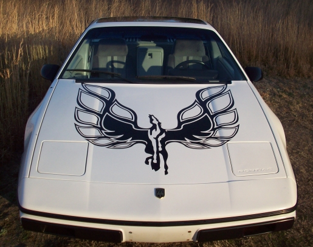

HOME
Order Form
Sail Panels
- Sail Panel Choices
- What's a Sail Panel?
- How to Remove & Replace Sail Panels
- Custom Graphics
- Bargains
- Sail Panel Care
Decals
- Decal Choices
- Bargains
Parts
- Parts for Sale
- Parts Interchange Manual
- Firewall Heat Shield
Info
- Fiero Secrets
- Temp Gauge Fix
- Poor Man's Fuel Injector Tester
- Headlight Repair
- Fiero Electric Antenna!
- Fix That Loose Belt!
- Fiero Clubs
Payment & Shipping
References
Rogue's Gallery (photos)
Contact Us
FIERO DECALS
The various adhesive vinyl letters originally applied to the Fiero have been called "decals". Since that seems to be the convention, we call them "decals" also.
We make Fiero decals like the originals and we make custom decals. All of them are available in any color or size. Below is a display of what we have readily available. If you are looking for something different, just Contact Us. Or to order, use the Order Form. We look forward to hearing from you.
Instructions for applying decals to your car are at the bottom of this page and a few of our samples are below.
{kind=link}
Sunshade Instructions Free download!
{kind=link}
Does your Fiero have a sunroof? Does it have a sunshade? If yes, you probably don't have the original GM instruction sheet that came with it. To keep your car authentic, or just to have accurate information, its great to have this document. We found an original GM instruction sheet for installing the sunshade, we scanned it, and are making it available here for no-charge download.
The file is an un-compressed PDF file and requires Adobe Reader or other similar application (such as "Preview" for you lucky Mac owners) to view it. If you print the file, which we suggest, reduce it as needed to fit within an 8.5" x 11" sheet of paper. Our printer driver did fine without any reduction, but yours may not.
Download Sunshade Instructions
1988 Fiero Specifications, $6 including shipping in US.
{kind=link}
{kind=link}
Years ago we obtained 5 copies of the factory specs on our '88 Fiero to use during restoration. Of course we used only one of the copies and have the remainder available for those interested in the detailed specs on their car. While specific to 1988, they are of value to all years since nearly all of the details were consisistent from 1984-88. If you need to know detailed body dimensions such as clearances, widths, heights, materials for specific parts, spring rates, etc., this document will help. A total of 34 photocopied pages stapled together and shipped flat (no folds) via First Class mail to a US address. Contact us for shipment costs ouside the US. Only a few available. Note that if you are purchasing a set of sail panels, we frequently can add these specs to the order at no additional shipping cost. Contact us for verification.
Car Cover Artwork, $20 including shipping in the U.S. for 12" Fiero logo.
{kind=link}
Customize any car cover with artwork of your selection using a paint mask (stencil) and fabric paint. The photo shows a 12" high Fiero logo but you can have custom artwork of any size. For example how about a logo with "Formula" or "Fiero GT"? Or Casper the Friendly Ghost, a Pegasus, Pontiac arrowhead or whatever your imagination can conceive. Our photo shows a 12" size and the mask is $20. Other artwork and sizes are priced according to area and complexity. The photo in the link shows the simple steps involved to apply the artwork.
LINK TO INSTALLATION PHOTOSSpare Tire Cover Artwork, $18 including shipping in the U.S. for 11.5" Fiero or Fiero GT logo.
{kind=link}
Customize a spare tire cover with artwork of your selection using a paint mask (stencil) and vinyl paint. The photo shows a white 11.5" high Fiero GT logo but you can have custom artwork of any size and color. Artwork is priced according to size and complexity. If you don't have a spare tire cover, get one on eBay from Pixelman Digital Products (use the "search" feature) for under $20 including shipping. Ask for the Size "O" black ADCO Spare tire cover which fits a 22" diameter tire. Then use our paint mask to apply artwork. Use the instructions for the car cover above, but rub the edges of the paint mask with a finger while heating with a hair dryer for better sealing. Apply paint using light coats to avoid seepage beneath edges. This is much less expensive than the $45 plus shipping for a plain black cover from traditional Fiero suppliers, plus you get a custom graphic.
LINK TO INSTALLATION PHOTOSHood Decal, Pegasus, $70 including shipping in the U.S. Colors are typically silver, white, red, or black but other colors are available. The decal is about 36" high and 24" wide and fits between the raised "ribs" on the hood. It comes with backing material and is shipped in a roll. It is important to unroll the decal upon arrival and let it "relax" until it is flat prior to installation. Otherwise the tendency to curl will hinder application.
If you are wondering about using clearcoat over decals, check this link: Clear Coat.
Check out the "Rogue's Gallery" section for a photo of this decal on a customer car.
 (Click on the photo for a larger image.)
(Click on the photo for a larger image.)
Hood Decal, 'Fiero-Bird', $95 including shipping in the U.S. Colors are typically silver, white, red, or black but other colors are available. The decal is 43" wide x 42" high (like the "Firebird" decal). This size is difficult for most installers to handle and expensive to ship so we make it in two halves. Installation instructions with layout dimensions are included HERE. Upon receipt it is important to unroll the decal and keep it flat until it is installed. Otherwise the tendency to curl will hinder application.
Steven Kreg's car
{kind=link}
{kind=link}
{kind=link}
Hood Decal, Fiero Logo, $50 including shipping in the U.S. Colors are typically silver, white, red, or black but other colors are available. The decal is about 30" high and 23" wide. Available as "Fiero" or "Fiero GT". It comes with backing material and is shipped in a roll. It is important to unroll the decal upon arrival and let it "relax" until it is flat prior to installation. Otherwise the tendency to curl will hinder application.
(Click on the photo for a larger image.)
{kind=link}
{kind=link}
{kind=link}
Hood Decal, Checkered Flag Style, $85 including shipping in the U.S. Color can be just about anything, but black, white, red, and silver are typical. The decal covers the full width of the area between the raised "ribs" on the hood except for 2" in the center. The length is a bit longer than the hood itself to permit trimming to the exact hood contour. It ships rolled in two pieces (one for each side of the hood).
{kind=link}
Body Stripe Kit, $165 including shipping in the U.S. Typical colors are red, black, white, silver and yellow but other colors are available. Non-stock colors may involve additional cost. The kit includes 8" stripes sufficient to cover the full length of a Fiero. The hood portion includes the Pegasus-in-shield and two stripes (with 2"gap) as one entire decal. REMAINING STRIPES ARE 8" WIDE PIECES APPLIED INDIVIDUALLY. (This is to economize on material.) To achieve a 2" gap, we suggest you apply a 2" piece of masking tape down the center of your car, then align the individual 8" stripes against the tape. After the stripes are in place, remove the masking tape.
The sample photos show the yellow Pegasus high on the hood to avoid the scoops but it can be centered on the hood or positioned to suit; you will need to let us know your preference. The white version by Alex Santos shows the standard version, although Alex's car has 9" wide stripes instead of 8".
{kind=link}
[Click on photos for larger image]
{kind=link}
{kind=link}
{kind=link}
{kind=link}
If you are wondering about using clearcoat over decals, check this link: Clear Coat.
"Pontiac" Windshield Decal - We have three styles available and each is $30 including shipping. Color is typically white but available in other colors upon request. All decals have curvature to match the top of the windshield. (See our "Bargains" section for discounted versions.)
Style 1 is a spot-on reproduction of an original Indy Fiero windshield decal courtesy of Tim Cebulla. Tim provided a "rubbing" of his original 1984 decal and we reproduced it pretty much exactly. As far as we can tell by comparison to original photos, this is the same decal that was on the actual '84 Pace Car. It is about 41" wide with 4.4" letters and Tim reports that it misses the sweep of the windshield wipers on his Indy IF shorter wipers are used. If standard length wipers are used, they do hit the decal. Hence Style 2 below.
Style 2 was made from a GM "New Old Stock" decal we borrowed from Ed Parks at The Fiero Factory. It is our understanding this version was sold by GM as a replacement for the Style 1. It is about 40" wide with 3" letters and will miss the sweep of the windshield wipers.
Style 3 uses the standard Pontiac trademark lettering. It is about 40" wide with 3.5" letters and it too will miss the sweep of the windshield wipers.
Note that we have all the above decals in the outline style for the same price. For a photo of the installed outline vrsion of Style 1 click HERE (Photo by Joe Crawford.)
{kind=link}
{kind=link}
Here's a picture from Kevin Gibler showing the Style 2 decal on his handsome Indy:
{kind=link}
{kind=link}
"Fiero GT" Windshield Decal #1, $45 including shipping in the U.S. Typically white but available in just about any color. This decal has the Fiero logo on either side and is curved to accomodate the windshield. (See our "Bargains" section for discounted versions.)
{kind=link}
"Fiero GT" Windshield Decal #2, $35 including shipping in the U.S. Typically white but available in just about any color. This decal was made from a factory original generously loaned to us by Kevin Lindeman in Minnesota. Kevin provided the original box and instructions along with the decal. The instructions indicate the "GT" can be cut from the decal and the "Fiero" portion installed on any Fiero. We don't yet have a photo of this decal installed on a customer's car.
{kind=link}
"Formula" door decal, $25 including shipping in the U.S. ($45 for a pair). Colors are typically silver, medium gray metallic, or black, but available in just about any choice. This decal is about 2" high and 24" wide, just like the original. (You may find reproduction Formula decals specified as about 22.25" long; we believe these may have been for the Firebird Formula.) It comes with the backing material beveled on both ends for alignment purposes. This means no measuring is required to apply the decal. Simply align the bevel with the bottom rear edge of the door and the decal is properly placed horizontally. (See layout drawing at the bottom of the page.) The "Formula" is also available as a windshield decal for $40. It is curved to match the top curvature of the windshield and provides clearance for windshield wipers. (See our "Bargains" section for discounted versions.)
{kind=link}
By the way, if you are wondering which color door decal was applied to a particular car color, the Pontiac 22P Parts Manual provides the answer:
Silver Metallic decals were used on black, red, and medium red metallic (maroon) Formulas
Medium Gray Metallic decals were used on yellow, silver, and white Formulas
For maintaining accuracy when restoring your Formula, we believe our decals are the best. In 1997 we purchased original "Formula" door decals for our own restoration and used them as models for the decals we now sell.
Indy Door Decal, $40 each including shipping in the U.S. This decal was made from a factory original courtesy of David Kancsar. David's car was purchased in late 2007 with just 4300+ miles on the odometer and came with an original unused door decal which he generously loaned us. So our reproduction is very accurate and not just a simple knock-off made using block letters. Note that several of the letters are joined. This feature is missing from many of the eBay and other aftermarket versions we have seen. (See our "Bargains" section for discounted versions.)
As a final note, the original decal color was "Medium Gray Metallic" rather than black although it is hard to tell the difference when applied unless the two colors are side-by-side. We can supply the Medium Gray Metallic for an additional $5 per decal.
Photo by Joe Bochichio (old decal, not our new one)
{kind=link}
Indy Wings decal, Silver/black/red, $7 for one or $12 for two including shipping in the U.S. For those who want to protect that expensive fender badge which originally came with the Indy, this is an option. Remove the original badge when you can't keep an eye on your Indy and use the decal, or put the decal on your "faux" Indy. Or just use it on the dash, door, glovebox, or other area of your car for dress-up. Same size as original badge (a bit over 4" wide). Simple peel-and-stick.
{kind=link}
Indy Nose Badge decal, Silver/black/red, $12 including shipping in the U.S. Good for that "faux" Indy or whatever application you wish. Same size as original nose badge so you can put it right over an existing nose badge. Peel-and-stick.
 (click for larger image)
(click for larger image)
Indy Engine Decals, black/red, $35 including shipping in the U.S. Colors can be changed if requested. Note that engine heat is hard on decals. We suggest using a paint mask (stencil) to paint the image. Paint masks are the same price as decals.
{kind=link}
Note #1: Using a paint mask on the air cleaner may not be easy if you have no experience. Some Indy owners advise they are using a decal in this location instead of a paint mask, but using the masks for the other engine graphics. We can provide masks/decal combinations if you wish.
Note #2: The valve cover has two grommeted holes. The distance between these holes seems to vary. If you provide us with the center-to-center distance between holes, we will adjust the paint mask or decal (whichever you order) to fit your particular valve cover.
For a photo of the installed Indy engine decals click HERE (Photo by Don Zeyer.)
If you are wondering about using clearcoat over decals, check this link: Clear Coat.
Indy Wheel Stripes, $40 + $5 shipping in the U.S. if a solo order. This is a set of four red wheel stripes that are mounted to the Indy wheels. The stripe is 3/16" wide. These are more expensive than we would like but it is due to the amount of material required.
{kind=link}
The stripes are not straight forward to apply without knowing the tricks. Along with Kevin Gibler's photo, above, we offer this link to a writeup of his installation notes and photos from Pennock's Fiero Forum:
http://www.fiero.nl/forum/Archives/Archive-000001/HTML/20070315-2-066770.html
Perhaps the key point for proper installation is cutting out the center of the wheel stripe decal so it sits flat on the rim of the wheel.
"Pontiac Racing" windshield decal, $45 including shipping in the U.S. The windshield decal has "Pontiac" and the flag in white, with the arrowhead and "Racing" in red.
 $45
$45
{kind=link}
GT Decal for Fastback, $6 for one or $10 for two including shipping in the U.S. Colors are silver/red. This decal is a duplicate of the original GT lettering which was incorporated in the fastback quarter windows. Some aftermarket quarter windows do not have the GT on them and we offer this two-color decal as a replacement. Photos below from Rob Bartlett show how they look when installed.
{kind=link}
{kind=link}
We noticed a competitor on eBay selling a similar GT decal who insists on using our photo to represent his product. Buyer beware!
Air Cleaner Decal for GT, $20 including shipping in the U.S. ($15 without the "K&N; Filter" decal.) The colors in the photo are red "Fiero GT" on silver background, orange K&N;, and white checks. Other colors are available on request.

Similar decals are available for other Fiero (same price) such as: "Fiero SE" (see below) "Fiero SS" "3.4L" can be added under the K&N; (in check area) for $5 additional.
Decals are also available with one or more solid stripes in place of the checkered flag effect. These can be further customized to suit your special project upon request.
Air Cleaner Decal for 4 Cylinder Fiero, $15 including shipping in the U.S. The colors in the photo are red "Fiero" and "Tech 4" and white checks. Other colors are available on request. Also available are "Fiero 2.5L", "Iron Duke" and "Quad 4". We can change these to suit your special needs. The K&N; decal can be added for $5.
(Click on the photo for a larger image.)
{kind=link}
Air Cleaner Decal for Fiero SE, $15 including shipping in the U.S. ($20 with a "K&N; Filter" decal.) The colors in the photo are red letters on silver background and white checks. Other colors are available on request.
{kind=link}
Air Cleaner Decal for Formula, $15 including shipping in the U.S. (Add $5 for an orange "K&N; Filter" decal.) The colors in the photo are red text on silver background with white checks. Other colors are available.
(Click on the photo for a larger image.)
{kind=link}
Tech 4 decal, $5 including shipping in the U.S. This is a duplicate of the "Tech 4" graphic found on the air cleaner of the 4 cylinder engines.

Fuel Door Decal, $10 including shipping in the U.S. for any of the styles shown. Can be customized to suit a special project. Colors are typically silver, white, red, or black but other colors are available. The decal is sized to fit just inside the perimeter of the fuel cap.
{kind=link}
For closeup images click the links below:
Checkered Flag decal, $5 including shipping in the U.S. This decal is about 3" diameter and is shown on a custom coolant cap. Other sizes and configurations are available such as for the fuel door.
{kind=link}
{kind=link}
"Handling by Lotus" decal, $5 including shipping in the U.S. About 3.5" long and 1" high, this decal can be used on the car body or interior. Colors shown are green on gold, but can be changed to coordinate with your car. And yes, we know it's a myth that Lotus designed any of the Fiero suspension systems, but let's keep the myth going among the uninitiated!

"Ram Air" body decal, any size and color. Samples show possibilities using 6" version. These can be used in many locations including the interior (dash or door), on the engine, or the air filter housing.
Red, $6. Photo by Dougie Murder
{kind=link}
{kind=link}
{kind=link}
{kind=link}
Pennock's Fiero Forum decals with User Name, $7 including shipping in the U.S., $1 of which is donated to the Forum. Size is 7" x 2.5". Color is typically white (which shows up best on exterior of rear car window) but any color is available. Metallics and reflectives will cost more.
{kind=link}
Plenum Paint Masks for V6 Fiero, Two of one type for $7 including shipping in the U.S. The V-6 Fiero in '85-86 has a decal on the intake plenum. We can provide replacement decals but they are heat sensitive (may last only a few years) so we offer these paint masks as an alternative. With these you can use high-temperature automotive paint to create the same effect. Other paint masks available on request.
(Click on the photo for a larger image.)
{kind=link}
Paint Masks for "Notchback" tail lights, $10 including shipping in the U.S. If you are adding lights to the "notchback" Formula which illuminate when the brakes are applied (similar "Pontiac" on the Fiero GT), you can use our paint mask for the letters. They are printed in reverse so you can paint the inside of your lenses. If you want text other than "Formula", let us know. Just keep in mind that the text should be visually balanced left to right.
{kind=link}
Paint Masks for "Fastback" tail lights, $10 including shipping in the U.S. For refurbishing the GT tail light lenses we offer these paint masks with pre-cut letters with proper spacing so all you have to do is apply them to get factory-accurate results. The masks can be made to suit application either to the inside of the lens surface (adhesive on the face of the text) or outside (adhesive on the back of the text). Be sure to tell us your preference when ordering. The photos show the version for application to the outer lens surface both with and without the transfer tape. The letters come with transfer tape and are applied just like a standard decal.
{kind=link}
{kind=link}
Headlight Cover Decal for Any Fiero, $5 including shipping in the U.S. Available in any basic color (white, black, red, silver, gold, etc.) This decal accentuates the "Pontiac" lettering in the left front headlight cover.
 (Click on the photo for a larger image.)
(Click on the photo for a larger image.)
Download Instructions for Headlight Decal
"Pontiac" Bumper Decal, $6 including shipping in the U.S. Available in any basic color (white, black, red, silver, gold, etc.) This decal accentuates the recessed "Pontiac" lettering in the rear bumper which was available in some Fieros.
{kind=link}
Download Instructions for Bumper Decal
"Fiero" deck lid decal, $10 including shipping in the U.S. This decal is used on the Formula, '87 SE, and '87-'88 Coupe and is typically black or silver. It is appoximately 6.4" wide and 2" high.
{kind=link}
"Fiero GT" deck lid decal, no red center pinstripe, $10 including shipping in the U.S. It is 10.65" long x 2" high and typically comes in red or black. We have found this decal on the '85 GT only and believe it may be an aftermarket replacement for the original. The factory original decal had a red center pinstripe. See below.
{kind=link}
"Fiero GT" deck lid decal with red center pinstripe, $20 including shipping in the U.S. This decal is made with individual letters and center pinstripes but comes as a single decal. We made this using "rubbings" from what we believe are original decals on '85 GTs and therefore this decal is true to the original factory decal. Overall the decal is about 11.38" wide and 2.25" high.
{kind=link}
The factory decal colors were as follows:
For light gray metallic (silver) cars, decals were black w/red pinstripe
For black, white, and red cars, decals were silver w/red pinstripe
"Fiero GT" window/body decal, $20 including shipping in the U.S. This is a two-color decal about 2" x 12" but the size can be changed to suit your application. It is shown with white letters and a red center pinstripe but this can also be varied. (Silver/red looks great.) Larger sizes will increase costs.
 [photo by Gordon Gay - his car]
[photo by Gordon Gay - his car]
"Fiero 2M4" deck lid decal, $10 including shipping in the U.S. Typically black or silver. This decal was used on Fieros with 4 cylinder engines. Overall size approximately 12" wide x 2" high.

"Fiero 2M6" deck lid decal, $10 including shipping in the U.S. Typically black or silver. This decal was used on Fieros with 6 cylinder engines. Overall size approximately 12" wide x 2" high.
{kind=link}
"Fiero 2M8" deck lid decal, $12 including shipping in the U.S. Typically black or silver. This decal is the same style as the 2M4 and 2M6. The cost is slightly higher than the 2M4 and 2M6 because we make them in small quantities. Overall size approximately 12" wide x 2" high.
{kind=link}
"Fiero SE" deck lid decal, $12 including shipping in the U.S. Typically black or silver. This decal is very similar to the 2M4/2M6/2M8. The cost is slightly higher than the 2M4 and 2M6 because we make them in small quantities. Overall size approximately 12.25" wide x 2" high. Note that this decal was not original to the Fiero but was created in response to customers who wanted to more specifically identify their car.
{kind=link}
"Fiero SD4" deck lid decal for the "Super Duty 4" engine, $12 including shipping in the U.S. Typically black or silver. This decal is the same style as the 2M4/2M6/2M8. The cost is slightly higher than the 2M4 and 2M6 because we make them in small quantities. Overall size approximately 12" wide x 2" high.
{kind=link}
"Fiero 4.9" or "Fiero 2M4.9" deck lid decal for the those who have converted to the Cadillac 4.9 engine, $12 including shipping in the U.S. Typically black or silver.

"Indy Fiero" deck lid decal, $20 including shipping in the U.S.
This decal is slightly different from the original. The original was made from a single piece of adhesive vinyl printed in silver and red. Ours has individual letters and pinstripes but nevertheless is a single decal. The decal shown is a duplicate of the original Indy deck lid decal. We can make other color combinations if you prefer.
{kind=link}
"Formula" deck lid decal, $12 including shipping in the U.S.
This decal uses exactly the same font style as the "Formula" door decal shown above. It is about 10.75 inches wide and 1 inch high.
We also have the word "Fiero" in the same font style as the "Formula" so you put the two together on your deck lid as "Fiero Formula", $20 including shipping in the U.S.
Fiero logo fender decal, $8 or $13 each including shipping in the U.S.
This decal is the Fiero logo (winged horse in a shield) in a single color such as black. It is typically put on the fender in a manner similar to a Ferrari. The single color logo is $8. A background shield in a second color (as in the example below) can be supplied for an additional $5, or $13 total. The size is approximately 3.6" wide x 4" high.
{kind=link}
A similar decal is available with the Pegasus as used in our sail panels. These are similar in size and color options to the standard logo above. Of course all sizes can be changed to suit.
{kind=link}
New Fiero logo fender decal, $13 each including shipping in the U.S.
The artwork on this decal was designed by Andrew Rogers of New York and has been popularized as the "New Fiero Logo". At Andrew's suggestion, $1 from the sale of each decal will be donated to Pennock's Fiero Forum where the artwork was first published and found a following. We have the new logo here as a fender decal although it can be applied anywhere. The size is 3" wide x 4" high. Four color combinations are shown and other customized color combinations are feasible. Since we use commercial materials for the decals we cannot get a true match to any car color. Additional text such as "Formula", "3.4 Turbo", "4.9 PFI", etc., can be added below the "Fiero" for your special project. Custom text or colors will add $4 per decal.
{kind=link}
Wheel Center Decals $10 for a set of 4 in black, $15 for a set of 4 black with a color background. For $5 additional the Fiero logo can be in colors other than black. The photos below show the decals mounted on Fiero wheel center caps which are 2" diameter. Note that we are providing the decals only, not the caps. If you would like to have colored caps we can provide the colored background as shown in the yellow sample. (The background is available for any decal, not just the plain logo.) However if you paint the wheel caps the color will maintain it's looks longer than adhesive vinyl, so you may wish to consider painting your wheel caps and using the basic decal for the image. Also we cannot match the exact color of your car with vinyl. If you have wheel center caps other than 2" diameter, we can make them to suit but pricing may be a bit more than the 2" size.
{kind=link}
If you are wondering about using clearcoat over decals, check this link: Clear Coat.
Again, let us know if you have special requirements for graphics. For examples of possibilities take a look at our sail panel photos.
{kind=link}
INSTRUCTIONS FOR APPLYING DECALS TO YOUR CAR
1. Work at room temperature if possible since the adhesive on the decals works best when warm.
2. Clean the surface where the decals are to be applied, first with soap and water, then wipe down with isopropyl alcohol to remove any possible remaining oil, wax, or soap film.
3. The as-received decal is a "sandwich" of three materials. At the bottom is the carrier paper, in the middle is the artwork (the decal itself), and on top is an adhesive paper called "transfer tape". Without removing any of these three parts of the decal, hold it in place by hand and move it around until you have it in what you think is the final position. (Use a measuring tape to get the decal parallel or center to body components or trim lines.)
4. Apply a piece of masking tape full length across the top of the decal to hold it in position and measure carefully to verify the final location. Re-position as necessary.
5. Using the masking tape as a hinge, flip the decal completely over so the opposite side is fully exposed. Starting at the top of the decal, use a fingernail or knife blade to carefully peel the carrier paper away from the artwork. Pull slowly. The artwork must not stick to the carrier paper; it should remain on the sticky transfer tape.
6. If you have a large decal such as used on a hood or windshield, use a spray bottle of water to wet both the decal and the car at this time. A few drops of soap added to the water will help. The water film will assist if you need to remove and reposition the decal, plus it will help get rid of bubbles when you use the squeegee in Steps 7 and 8.
Note: You can use a commercially available decal application fluid in place of water to help apply the decal. A commercial product may be advantageous on a large decal or body stripes. Several brands are available, one of which is Rapid-Tac, and they can be found on-line at eBay or with a Google search.
7. When the carrier is peeled away, carefully lower the transfer tape with its artwork onto the car making sure the upper center section of the artwork touches first. As you slowly lower the decal, use a squeegee (finger pressure or a credit card are ok on small decals) to smooth the artwork from the center outward against the car. This will help minimize bubbles. Do NOT lower the entire decal (or large portions of it) and then apply the squeegee. Let the squeegee gently push the decal against the car so bubbles are not trapped under the vinyl.
8. With the transfer tape and masking tape still attached, rub the artwork through the transfer tape with a squeegee until it is firmly adhered. Look for bubbles at this time and work them out by squeezing them to the edge of the artwork.
9. Peel away the masking tape and transfer tape. Work carefully to insure that the artwork stays on the car and does not adhere to the transfer tape. This is especially important to watch if you have sprayed the decal with water. In fact if you have used water or other decal application fluid on a large decal, you may have to wait 2-4 hours for the fluid to dry before removing the transfer tape. Otherwise the decal will stick to the transfer tape and not to the vehicle.
10. With the transfer tape removed, burnish the artwork firmly but carefully if any bubbles remain. Do not catch the edges as this may cause the artwork to tear. Look at the artwork in good light to make sure bubbles are not left under it. If they are, burnish these areas carefully. It is possible to eliminate troublesome bubbles by puncturing them with a sharp pin, then burnishing. If water was used, it may take a few hours for traces to evaporate from under the vinyl; adhesion at this time may be weak.
Now step back and admire your completed work. The decal is is adhered sufficiently to immediately use the car, but full ahesion will occur over about 48 hours as the adhesive cures.
Tip: If you have a decal that has several components such as a windshield decal with several letters, it can be cut into smaller sections AFTER it is taped in final position but before the backing paper is removed. For example the "Pontiac" decal can be cut between every second or third letter. This makes application easier with several small pieces instead of one large piece. In fact you can cut between every letter if that makes you more comfortable.
Long-Term Care: Keep your decal clean and do not allow solvents or soap to get under the edges. Use of "303 Aerospace Protectant" every few months will extend the life of a decal and we recommend it, especially in sunny climates. You can find 303 Protectant on-line with a Google search. It is sometimes available at auto parts stores.